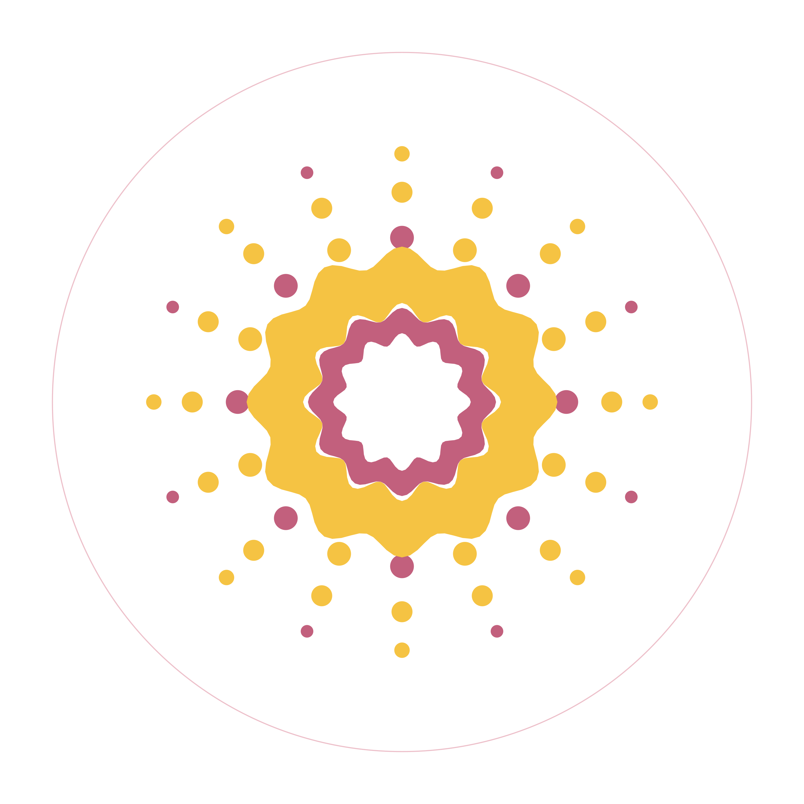
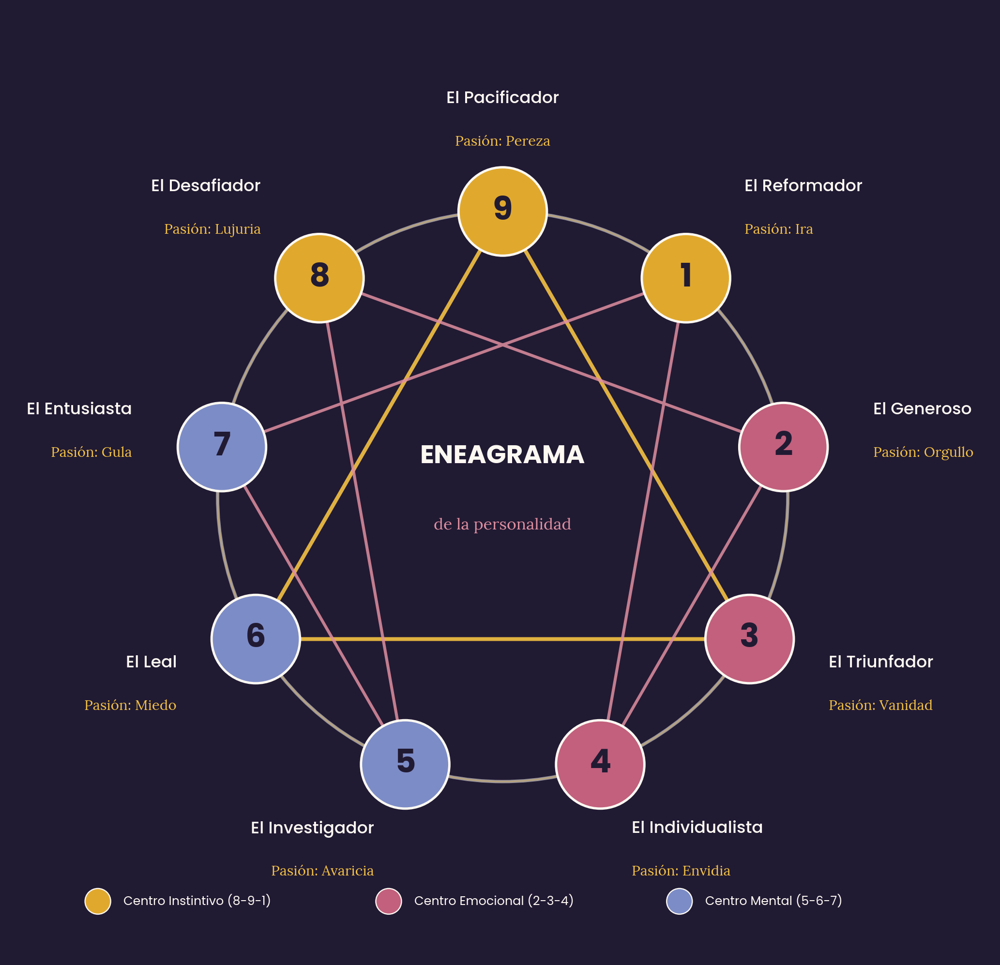

Un espacio para reconciliarte con tu historia familiar y aprender a aceptar lo que la vida te presenta, para vivir con más paz, presencia y libertad. Inspirado en el enfoque sistémico de Bert Hellinger.

Aprender a Vivir Contigo es un espacio de acompañamiento terapéutico y educativo donde las personas reconocen su lugar en su historia familiar y aprenden a aceptar lo que la vida les presenta, para vivir con más paz, presencia y libertad.
Ayudamos a que cada persona pueda mirar su propia historia, y la de su sistema familiar, con respeto y comprensión, para dejar de luchar contra lo que ya sucedió y empezar a construir, desde ahí, una vida propia.
Todo tiene un lugar. El sufrimiento aparece cuando algo, una persona, un hecho, una emoción, es excluido o no aceptado en el lugar que le corresponde.
Comprender antes de intervenir. No se trata de cambiar a los demás, sino de mirar con conciencia lo que el sistema o la experiencia están mostrando, y desde ahí, elegir.
El cambio empieza puertas adentro, y luego se refleja hacia afuera como paz, salud y vínculos sanos.
Antes de vivir un taller, este espacio te invita a un primer reconocimiento: identificar el patrón con el que tu mente aprendió a organizar el mundo, y la marca emocional más temprana con la que tu niño interior aprendió a protegerse.
Hacer los test gratisConstrucción del árbol genealógico y seis temas sistémicos
Un encuentro para reconocer y sanar los conflictos inconscientes con mamá y papá
Reflexiones sobre constelaciones familiares, aceptología, heridas de la infancia y genealogía, para leer entre una sesión y otra.
Muchas decisiones que tomamos sin saber por qué esconden un vínculo con alguien de nuestro sistema familiar.
AceptologíaConfundir aceptación con rendición nos hace pelear contra realidades que ya ocurrieron.
Heridas de la infanciaCuando una reacción se siente "demasiado grande", casi siempre hay una herida de la infancia hablando.
Cuéntanos qué taller te interesa y te respondemos con la información completa.
Escríbenos por WhatsApp